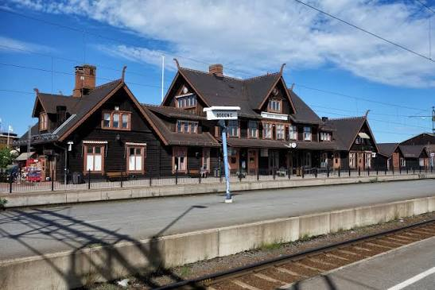
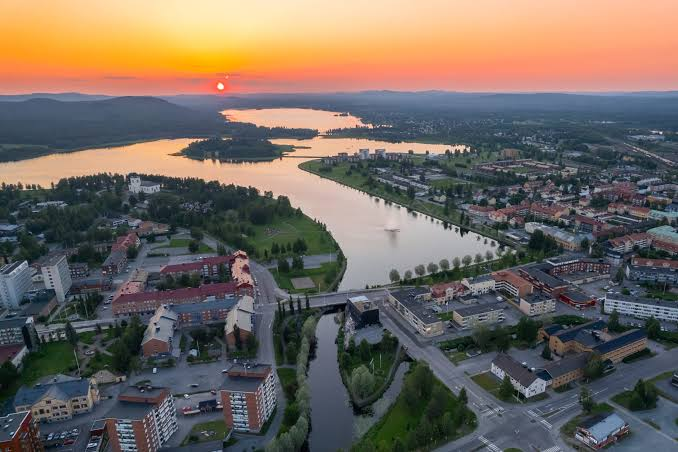
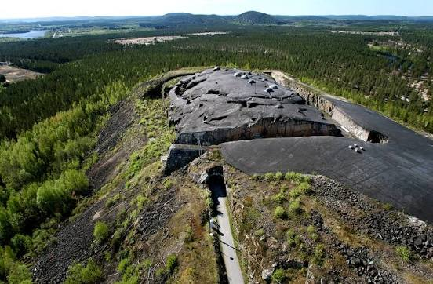

Boden

Boden är en stad i Norrbotten i norra Sverige.
Staden ligger vid Luleälven och har ungefär 28 000 invånare.
Boden är känd för sin vackra natur och närhet till skogar och älvar.

Boden har en lång militärhistoria och är en viktig militärstad.
Bodens fästning byggdes i början av 1900-talet för att skydda norra Sverige.
Än idag finns ett stort militärt förband i staden.

Boden erbjuder många aktiviteter året runt.
På vintern finns möjligheter till skidåkning och andra vinteraktiviteter.
På sommaren är friluftsliv, fiske och vandring populärt.